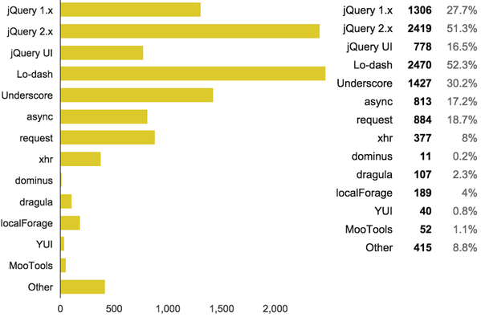

NodeSchool Cleveland
February 15, 2016
Lololodash
Thanks to our sponsors


Tonight's workshopper...
Lololodash
Why Lodash?
for real
Most depended upon npm package
Source: Npm RankDeveloper Survey
 Source: Pony Foo JavaScript Developer SurveyNpm Downloads Stats
Source: Npm DownloadsLodash is the fastest growing npm package with ~1,000 new dependents each month

Source: Npm Rank Visualizations
But seriously, what is it good for?
Lodash makes JavaScript easier by taking the hassle out of working with arrays, numbers, objects, strings, etc.
//Arrays
_([1, 2]).forEach(function(value) {
console.log(value);
});
// → logs `1` then `2
//Objects
_.forEach({ 'a': 1, 'b': 2 }, function(value, key) {
console.log(key);
});
// → logs 'a' then 'b'
//Strings
_.forEach('lololodash', function(letter) {
console.log(letter);
});
//logs each character in string individually
//Manipulating
var companies = ['LeanDog', 'Rockwell Automation']
_.map(companies, function(company) {
return ('Thanks ' + company);
});
// → ["Thanks LeanDog", "Thanks Rockwell Automation"]
//Testing
var users = [
{ 'user': 'barney', 'age': 36, 'active': true },
{ 'user': 'fred', 'age': 40, 'active': false }
];
_.filter(users, { 'age': 36, 'active': true });
// → object for ['barney']
var users = [
{ 'user': 'barney', 'age': 36 },
{ 'user': 'fred', 'age': 40 },
{ 'user': 'pebbles', 'age': 1 }
];
var youngest = _
.chain(users)
.sortBy('age')
.map(function(o) {
return o.user + ' is ' + o.age;
})
.head()
.value();
// → 'pebbles is 1'
But do I really need it?
// native
if (haystack.indexOf("needle") !== -1) { }
// lodash
if (_.includes(haystack, "needle") { }
// NOTE: includes is coming in ES7 (ECMAScript 2016)
// native
for (var prop in obj) {
if (obj.hasOwnProperty(prop)) {
console.log(obj[prop]);
}
}
// lodash
_.forOwn(obj, function(prop, key) {
console.log(prop);
});
By avoiding slower native methods, we’re able to add functionality, and sidestep common performance and consistency traps.Source: Say Hello to Lo-Dash
It's gotta be heavy!
Staring with v4.x
- Core build (~4 kB gzipped)
- Full build (~20 kB gzipped)
what can it do?
some favorites
var developers = [
{ name: "Joe", age: 23 },
{ name: "Sue", age: 28 },
{ name: "Jon", age: 32 },
{ name: "Bob", age: 24 }
], age = 0;
age = developers.reduce(function(memo, developer) {
return memo + developer.age;
}, 0); // initialize age with 0
var ownerArr = [{
"owner": "Colin",
"pets": [{"name":"dog1"}, {"name": "dog2"}]
}, {
"owner": "John",
"pets": [{"name":"dog3"}, {"name": "dog4"}]
}];
// Array's map method.
ownerArr.map(function(owner){
return owner.pets[0].name;
});
// Lodash
_.map(ownerArr, 'pets[0].name');
// Create an array of length 6 and populate them with unique values.
// The value must be prefix with "ball_".
// eg. [ball_0, ball_1, ball_2, ball_3, ball_4, ball_5]
// Array's map method.
Array.apply(null, Array(6)).map(function(item, index){
return "ball_" + index;
});
// Lodash
_.times(6, _.uniqueId.bind(null, 'ball_'));
// Get a random number between 15 and 20.
// Naive utility method
function getRandomNumber(min, max){
return Math.floor(Math.random() * (max - min + 1)) + min;
}
getRandomNumber(15, 20);
// Lodash
_.random(15, 20);
// Extending an Object
var objA = {"name": "colin", "car": "suzuki"};
var objB = {"name": "james", "age": 17};
_.assign(objA, objB);
// {"name": "james", "age": 17, "car": "suzuki"};
// Remove an array of keys from object
var objA = {"name": "colin", "car": "suzuki", "age": 17};
objA = _.omit(objA, ['car', 'age']); // {"name": "colin"}
// Using try-catch to handle the JSON.parse error
function parse(str){
try {
return JSON.parse(str);
}
catch(e) {
return false;
}
}
// With Lodash
function parse(str){
return _.attempt(JSON.parse.bind(null, str));
}
// Defaults
var default = { 'user': 'barney', 'age': 36 }
_.defaults({'user': 'fred'}, default);
// → { 'user': 'fred', 'age': 36 }
Check out some other goodies
- _.clone / _.cloneDeep
- _.results
- _.sortBy
- _.groupBy
- _.some / _.every
- _.sample
- _.template
- _.merge
- _.throttle / _.debounce
What about underscore?
Underscore is now a subset of Lodash
Source: Underscore vs. LodashLodash is more performant
Source: Underscore vs. LodashLodash has a more active community
Source: Underscore vs. LodashLodash is growing faster
Source: Underscore vs. LodashBackbone

Let's get started
To get setup:
$ mkdir lololodash && cd lololodash
$ npm install lodash
$ npm install -g lololodash
To run:
$ lololodash
$ lololodash run exercise1.js
$ lololodash verfiy exercise1.js
This presentation:
http://bit.ly/nsclepresentations
References
- Lodash Website
- Changelog
- 10 Javascript Utility Functions That You Should Probably Stop Rewriting (Colin Toh)
- Differences between lodash and underscore (Stack Overflow - answered by Lodash's creator')
- John-David Dalton's Twitter Profile
- Reducing Filter and Map Down to Reduce (Elijah Manor)
Thank You!